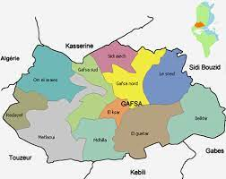

Aux porte du Sahra, Gafsa, ville de 100 000 habitants, constitue une étape presque obligatoire avant de plonger dans le désert.
Son histoire est très ancienne puisque des traces de peuplements préhistoriques datés de 8 500 av. J. -C. y ont été découvertes et témoignent
de la civilisation capsienne.
Cet adjectif vient de Capsa, nom de Gafsa lors de la fondation au IIe siècle avant J. -C. sous le règne de Jugurtha.
Ce roi numide considérait la ville comme son trésor.
Si les Romains la détruisent en 107 avant J. -C., ils la rebatissent et on font un municipe.
Au Ve siècle, elle devient la capitale du Royaume berbèere jusqu'a l'arrivée des Byzantins en l'année 553.
Elle est conquise en 667 par les Musulmans.
Malgré les dominations successives, les Gafsiens se montrent toujours rebelles et font preuve d'independantisme.
